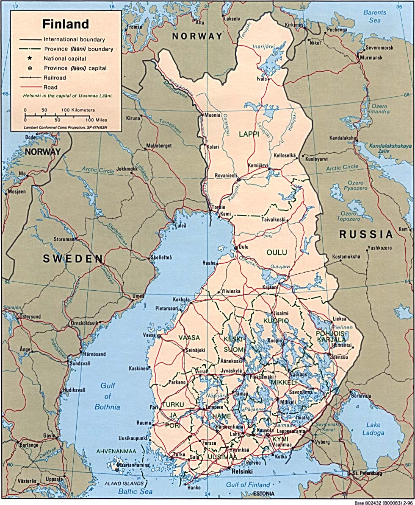
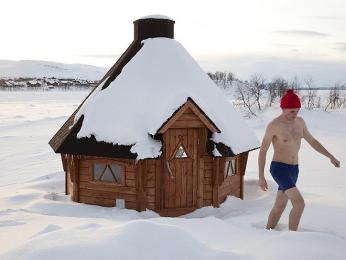

Finsko, oficiálně Finská republika (finsky: Suomen tasavalta), je nordická země v severní Evropě. Sousedí se Švédskem na severozápadě, Norskem na severu a Ruskem na východě, s Botnickým zálivem na západě a Finským zálivem na jihu, naproti Estonsku. Finsko má rozlohu 338 145 čtverečních kilometrů a populace 5,6 milionu.
Helsinky jsou hlavním městem a největším městem. Většina populace jsou etničtí Finové. Finským a švédským jsou úředními jazyky, přičemž švédština je mateřským jazykem 5,2 % populace. Klima Finska se liší od vlhkého kontinentálního na jihu k boreálnímu na severu. Převládajícím typem půdního krytu je převážně lesní bióm s více než 180 000 zaznamenanými jezery.
Finsko je parlamentní demokracií, kde je výkonná moc soustředěna do rukou vlády, prezident má výraznější roli pouze v zahraniční politice. V čele současné vlády stojí od června 2023 premiér Petteri Orpo, prezidentem je od března 2018 již podruhé Sauli Niinistö. V jednokomorovém parlamentu se tradičně ustavují široké koalice napříč politickým spektrem. Pro politický proces je typická snaha dosáhnout konsenzu, zejména v základních bezpečnostních otázkách, stejně jako maximální transparentnost směrem k veřejnosti, jež stojí za všeobecnou důvěrou v instituce i v politiku jako takovou.
Finská historie je fascinujícím příběhem proměn, který vychází ze složitého vlivu sousedních mocností a regionálních událostí. Během středověku bylo Finsko pod silným vlivem Švédska, což ovlivnilo jeho kulturní, náboženské a politické základy, včetně přijetí křesťanství. V 19. století došlo k výrazným změnám, když se Finsko v roce 1809 stalo autonomním Velkoknížectvím v rámci Ruského impéria. Toto období bylo rovněž svědkem vzestupu finského nacionalismu a budování unikátní kulturní identity.
Třetí odstavec historie Finska je významně poznamenán obdobím po získání nezávislosti v roce 1917. Země prošla komplexními změnami v období mezi světovými válkami, s klíčovým momentem během Zimní války (1939–1940) s Sovětským svazem. Tato válka, která vypukla v důsledku územních neshod a geopolitických tlaků, symbolizuje finskou odvahu a schopnost bránit svou nezávislost.
Finsko se během druhé světové války vyhnulo okupaci, ale válka ovlivnila národ na mnoha úrovních. Po válce se Finsko stalo nespojencem Západu v chladné válce, udržující vyvážený vztah s mocnostmi východního bloku a západním světem. Tato vyváženost se stala charakteristickým prvkem finské zahraniční politiky a neutralitního postoje. Rychlá industrializace a ekonomický růst, které následovaly po válce, transformovaly finskou společnost. Země přešla do role moderního sociálního státu, kde bylo kladen důraz na vzdělání, zdravotní péči a sociální spravedlnost. Tyto prvky tvoří pevné základy pro finský model společenského a ekonomického úspěchu v současné době.
Finsko je oficiálně dvojjazyčné, uznávající finský a švédský jazyk jako své národní jazyky. Finský jazyk, patřící do jazykové rodiny finno-ugorské, se odlišuje od svých severských sousedů a má kořeny pevně zakotvené v kulturní identitě země. S přibližně 90% populace mluvící finsky, slouží jako převažující jazyk.
Švédština, mluvená přibližně 5% populace, převažuje zejména podél pobřeží a na Ålandských ostrovech. Dvojjazyčnost ve Finsku odráží historické vazby na Švédsko, zejména během období švédské nadvlády. Finský a švédský jsou povinnými předměty ve vzdělávacím systému, podporujícím národ, který si cení jazykové rozmanitosti.
V posledních letech došlo k nárůstu uznání a používání angličtiny, zejména mezi mladšími generacemi. Anglická znalost je vysoká, což činí Finsko přístupnou destinací pro mezinárodní návštěvníky a přispívá k celosvětové propojenosti země. Přesto finský jazyk zůstává klíčovou součástí kulturní identity a dědictví národa.
Sauny je nedílnou součástí finského života, pevně zakotvená v každodenních rutinách a sociálních interakcích. Sauny představují společenská místa relaxace a soudržnosti. Ať už doma, v kancelářích či ve veřejných prostorách, Finové přijímají saunu jako drahocennou tradici, podporující otevřenost, rovnost a pohodu. Saunové rituály, ať už jde o neformální setkání či pracovní schůzky, epitomizují podstatu finského tepla a spojení.
Outdoorové aktivity ve Finsku prosperují uprostřed úžasné krajiny. S nekonečnými jezery, hustými lesy a nedotčenými národními parky jsou Finové posedlí životním stylem spojeným s přírodou. Turistické stezky jsou v létě vzbuzující úctu, zatímco zima proměňuje oblast v zasněžený ráj, ideální pro lyžování a motorku. Rybaření, shánění potravy a kempování posilují hluboké spojení s přírodou a odrážejí lásku Finů k přírodě.
Finské svátky odrážejí směsici tradice, přírody a kulturní hrdosti. Den nezávislosti 6. prosince oslavuje finskou suverenitu s vážnými ceremoniemi a rozsvícením svíček. Střed léta kolem 24. června přináší živé oslavy s ohňostroji, tradičními tanci a radováním se z nekonečného denního světla. Vánoce jsou milovaným rodinným zážitkem s Ježíškem, svátečními jídly a pohádkovou tradicí "Joulupukki". Tyto svátky zdůrazňují bohaté dědictví Finska a teplou atmosféru svátečních oslav.
